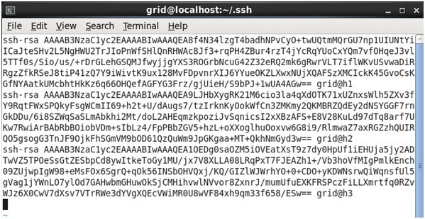

为了提高SSH连接的安全性，除了更改默认的22端口外，应尽量使用密钥代替口令登录。
原理
使用密钥登录时，服务端将一段随机的字符串发送给客户端，客户端使用私钥加密之后，发送回服务端，服务端使用客户端的公钥（事先保存在服务端）进行解密，如果解密成功，说明客户端可信，允许其登录，否则拒绝。
配置
无论作为服务端还是作为客户端，都有两个相关的配置文件，都分别在用户个人目录和/etc/ssh/目录下。
作为服务端
/etc/ssh/sshd_configuration
这个文件是ssh服务的配置文件。
其中跟密码密钥配置相关的:
PermitRootLogin prohibit-password //是否允许root登录
PubkeyAuthentication yes //是否允许密钥登录
AuthorizedKeysFile .ssh/authorized_keys //允许连接的客户端密钥的集合文件
PasswordAuthentication yes //是否允许密码登录
PermitEmptyPasswords no //是否允许空密码
~/.ssh/authorized_keys
这个文件是允许连接的客户端的公钥的集合。客户端的公钥没有发送到这里的话是不允许连接的。

作为客户端
两个配置文件分别是/etc/ssh/ssh_config和~/.ssh/ssh_config，前者面向所有用户，后者针对相应的单个用户，两个文件的写法是一样的。格式如下:
|
|
配置完成以后，输入命令ssh alias1即可登录alias1服务端。
同样，如果想要传送文件到alias2服务端，只需输入命令scp i_am_dsb.txt alias2:~/received_files/(轻松又惬意，对比一下scp i_am_dsb.txt -P 2345 -i ~/.ssh/dsb 110.119.120.0:~/recieved_files/，另外这个大写的P简直是神坑)。